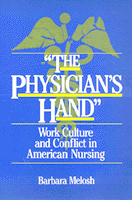

<body bgcolor="#FFFFFF" text="#000000" link="#0000FF" vlink="#CC0000" alink="#CC0000"><center><hr width="350" size="1" align="center" noshade>Recasts nursing history and places it in the context of women�s history, medical history, and sociology<hr width="350" size="1" align="center" noshade><p><a href="https://cdcshoppingcart.uchicago.edu/Cart/ChicagoBook.aspx?ISBN=9780877222781&&PRESS=temple" target="_top">Buy this book!</a> | <a href="https://cdcshoppingcart.uchicago.edu/Cart/Cart.aspx?PRESS=temple" target="_top">View Cart</a> | <a href="https://cdcshoppingcart.uchicago.edu/Cart/Cart.aspx?PRESS=temple" target="_top">Check Out</a></p><p></p></center><!--none//--><h1>The Physician's Hand</h1>
<H2>Nurses and Nursing in the Twentieth Century</H2>
<h3>Barbara Melosh</h3>
<P>cloth 0-87722-278-9 $29.95, Dec 82, <FONT COLOR=#990033>Out of Print</FONT>
<br>paper 0-87722-290-8 $24.95, Dec 82, <FONT COLOR=#990033>Out of Stock Unavailable</FONT>
<br>Electronic Book 1-43990-460-X $26.95 <FONT COLOR=#990033>Out of Print</FONT>
<BR> 240 pp
</P><BLOCKQUOTE><I>"...a significant contribution to the evolution of nursing...[it] deserves careful reading by anyone who feels involved in the future of nursing."</I>
<br>&#151<b><I>Los Angeles Times Book Review</I></b><I></I></BLOCKQUOTE>
<p>This book recasts nursing history and places it in the context of women�s history, labor history, medical history, and sociology. Removed from the limited framework of professionalization, nursing history can provide a fresh perspective on broader issues in social history. First, it offers an illuminating example of the ways in which gender informs work and, conversely. How work reproduces and transforms relationships of power and inequality.
<p>Second, the experience of nurses adds a new dimension to our understanding of work. More than a study of professionalization, nursing history is the story of women workers� experience in a rationalizing service industry. Like other workers, nurses faced a fundamental reorganization of work that changed the content and experience of nursing. But unlike many others, they did not suffer a dilution of skill. The book also explores the shifting configurations of social relations on the job and their implications for nurses� work.
<p>Third, nurses� history provides a useful standpoint for analyzing the possibilities and limitations of women�s work.
<p>Finally, nursing history alerts us to the complexities of working women�s consciousness, countering the common notion of women�s passivity in the workplace.
<p><I>The Physician�s Hand</I> traces nursing history from the twenties to the seventies. It begins just after World War I when the "trained nurse" had gained a secure place in medical care but not yet found a niche in the hospital. Most worked in private duty. Chapter 1 outlines the theoretical framework of professionalization. Chapter 2 examines the history and culture of hospital schools, and the following chapters focus on the changing structure and experience of nursing in its three major settings: private duty nursing, public health care, and hospital work. The conclusion weighs the competing traditions of professionalization and occupational culture in nurses� history and their meaning for the current crisis in nursing.
<BR>&nbsp;<H2>About the Author(s)</H2>
<P><b>Barbara Melosh</b> is Assistant Professor of History at the University of Wisconsin, Madison. She has also worked as a nurse.</P>
<BR><H2>Subject Categories</H2>
<p><A HREF="/tempress/women.html" TARGET="_top">Women's Studies</a>
<BR><A HREF="/tempress/health.html" TARGET="_top">Health and Health Policy</a>
</p>
<p align="center"><a href="https://cdcshoppingcart.uchicago.edu/Cart/ChicagoBook.aspx?ISBN=9780877222781&&PRESS=temple" target="_top">Buy this book!</a> | <a href="https://cdcshoppingcart.uchicago.edu/Cart/Cart.aspx?PRESS=temple" target="_top">View Cart</a> | <a href="https://cdcshoppingcart.uchicago.edu/Cart/Cart.aspx?PRESS=temple" target="_top">Check Out</a></p><p><font face="Arial" size="1"><a href="copyright.html" onMouseOver="window.status='Web Copyright Policy';return true;" onMouseOut="window.status=''" title="Web Copyright Policy">&copy;</a> 2015 <a href="http://www.temple.edu" target="new" onMouseOver="window.status='Link to Temple University home page';return true;" onMouseOut="window.status=''" title="Link to Temple University home page">Temple University</a>. All Rights Reserved. http://www.temple.edu/tempress/titles/231_reg.html</font></p>